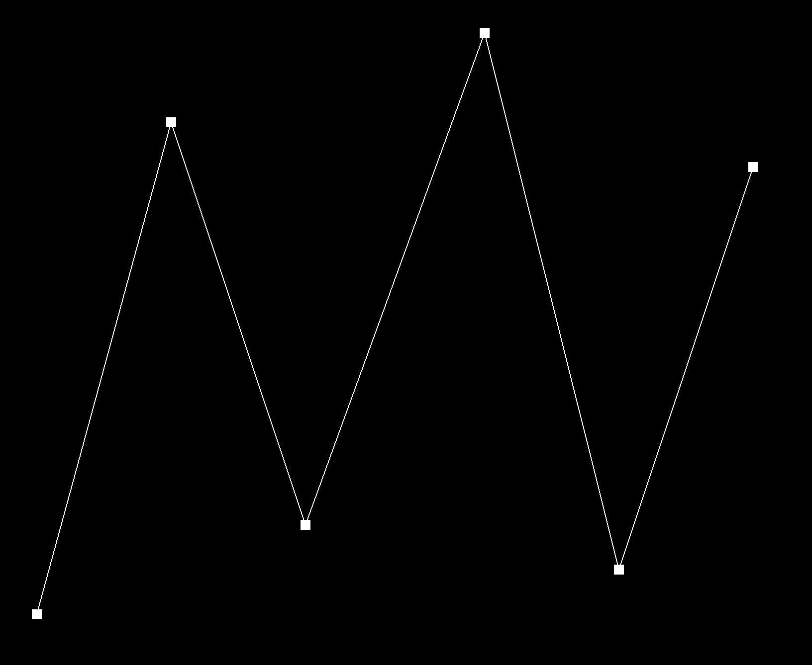
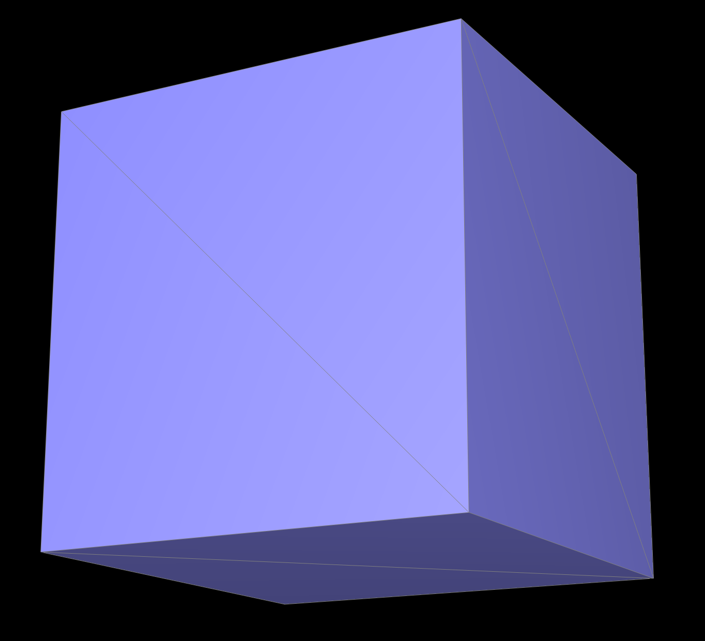

CS184/284A Fall 2026 Homework 2 Write-Up
Link to webpage: https://cal-cs184-student.github.io/hw2-og-nh-writeup/
Link to GitHub repository: https://github.com/cal-cs184-student/hw2-og-nh.git

Overview
In this homework, we implemented Bezier curves and surfaces, then worked with triangle meshes using the half-edge data structure. We started with de Casteljau's algorithm, using repeated linear interpolation to evaluate points on a curve before extending the same process to surfaces. For the mesh section, we calculated area-weighted vertex normals for smoother shading, implemented edge flips and splits, and combined these operations with position updates to perform Loop subdivision.
One of the main things we learned was how carefully the pointers need to be handled when changing a mesh. Even though an edge flip or split only affects a small area, all the connections need to stay consistent. We also found it interesting that the way a mesh is connected can change its shape after subdivision. The cube experiments showed this clearly, as changing the triangulation beforehand affected both how the corners rounded off and how symmetrically the cube subdivided.
Section I: Bezier Curves and Surfaces
Part 1: Bezier curves with 1D de Casteljau subdivision
De Casteljau's algorithm finds a point on a Bezier curve by repeatedly using linear interpolation
between adjacent control points. For each pair, we calculated \( (1 - t)\,p_i + t\,p_{i+1} \),
which gives a point between them based on the value of \( t \). Each step reduces the number of points by one,
so repeating this process eventually leaves a single point on the curve. To implement this, we looped
through each adjacent pair in BezierCurve::evaluateStep, calculated the interpolated point, and added
it to a new vector using push_back. We then returned this vector. Our function only performs one level
of interpolation at a time, which allows the intermediate steps to be shown separately.
|
 |

|

|

|

|

|

|

|
Part 2: Bezier surfaces with separable 1D de Casteljau
For Bezier surfaces, de Casteljau's algorithm uses the same interpolation process as Part 1, but applies it in two directions across a grid of 3D control points. The surface is evaluated using two parameters, \( u \) and \( v \). First, each row of control points is treated as a Bezier curve and evaluated at \( u \), giving one point per row. These resulting points then act as the control points for another Bezier curve, which is evaluated at \( v \) to give the final point on the surface at \( (u, v) \).
To implement this, we started with BezierPatch::evaluateStep, which interpolates between adjacent points using the same formula as Part 1, but with Vector3D points and \( t \) passed in as an argument. In evaluate1D, we made a copy of the input points and repeatedly called evaluateStep until only one point remained, then returned that point. Finally, in evaluate, we looped through each row in controlPoints and called evaluate1D with \( u \), storing each result in the rowPoints vector. We then called evaluate1D on rowPoints with \( v \) and returned the resulting point on the surface.

|

|
Section II: Triangle Meshes and Half-Edge Data Structure
Part 3: Area-weighted vertex normals
To calculate the normal at a vertex, we used the half-edge structure to loop through the triangles connected to it. Starting from the vertex's outgoing half-edge, we moved to h->twin()->next() each time until we returned to the starting half-edge. We used HalfedgeCIter because the function is const and only needs to read the mesh. For each non-boundary face, we used the current vertex's position as \( p_0 \) and found the other two positions, \( p_1 \) and \( p_2 \), by following the next pointers. We then calculated cross(p1 - p0, p2 - p0) and added it to a running sum. This gives a vector perpendicular to the triangle with a magnitude equal to twice its area, so larger triangles naturally contribute more to the final normal. After adding these vectors for all the connected triangles, we normalized the sum using n.unit(). The result is an area-weighted unit normal that allows the surface to appear smoother when using Phong shading.

|

|
Part 4: Edge flip
To implement the edge flip, we drew the two triangles before and after the operation and labeled their half-edges, vertices, edges, and faces. The flip replaces the shared edge with an edge connecting the two opposite vertices, without adding or deleting any mesh elements. In flipEdge, we first checked whether the edge or either adjacent face was on a boundary and returned the edge unchanged if so. We then stored iterators to the six inner half-edges, their four outside twins, the four vertices, the five edges, and the two faces.
Using these labels, we reassigned the pointers to match the flipped configuration. We used setNeighbors to set the next, twin, vertex, edge, and face pointers for each of the six inner half-edges, then updated the half-edge pointers for all four vertices, five edges, and two faces. Setting these explicitly helped us keep track of the connections, including ones that stayed the same.
One detail we needed to account for was that the half-edges along the flipped edge now start at different vertices. This meant the original endpoints could no longer point to those half-edges, so we made sure each vertex pointed to a half-edge that still started at it. Finally, we returned the flipped edge. Since the operation only updates the elements around the two triangles, it takes a constant amount of work regardless of the size of the mesh.
To check that the edge flip worked, we flipped the same edge several times in a row. Flipping it twice should bring back the original diagonal, and repeating the operation should not create holes or crash the program. We also used the GUI's half-edge selection to check the connections. After selecting a half-edge on one of the flipped triangles, we pressed N three times to check that we returned to the starting half-edge. We then used T to check that the half-edges on either side of the new edge were each other's twins. Following the spec's recommendation, we explicitly set all the pointers for the six inner half-edges, including ones that stayed the same. This helped us keep track of the connections and avoid missing a pointer.

|

|
Part 5: Edge split
To implement the edge split, we drew the two triangles before and after the operation and labeled the elements, similar to our approach for the edge flip. Splitting the shared edge adds a vertex at its midpoint and connects it to the two opposite vertices, turning the original two triangles into four. In splitEdge, we first checked for boundary edges and returned without modifying the mesh if either adjacent face was a boundary face. We then stored iterators to the existing elements and created one vertex, three edges, six half-edges, and two faces. We reused the original edge as one half of the split edge and kept the two original faces for two of the resulting triangles. After creating the new vertex \( m \), we set its position to the average of the original edge's endpoints. We then used setNeighbors to assign the pointers for all 12 inner half-edges and updated the half-edge pointers for each vertex, edge, and face. Following the labeled diagram helped us keep track of which elements belonged to each triangle. We also made sure that \( m \)'s half-edge pointed along one half of the original edge, as required.
To prepare for Loop subdivision, we marked \( m \) as a new vertex and marked the two edges connecting it to the opposite vertices as new edges. Both halves of the original edge were marked as old, even though one was newly allocated, so they would not be flipped during subdivision. Finally, we returned \( m \). Like the edge flip, the split only changes a fixed number of nearby elements, so the amount of work does not depend on the overall mesh size.
Since an edge split creates new mesh elements, we tested it with a wider range of operations. We split the same region several times, split newly created edges, and alternated between splits and flips on edges both near each other and farther apart, as the spec suggested. With the wireframe on, we checked that each new vertex was at the original edge's midpoint and connected to both opposite vertices. We also checked that the two original triangles became four without holes or overlapping faces. Using N and T on the new half-edges helped us check that each face formed a closed cycle of three half-edges and that the twin pointers matched in both directions. Since Loop subdivision uses both flips and splits, checking these connections carefully meant that it worked without additional debugging when we moved on to Part 6.

|

|

|

|
Part 6: Loop subdivision for mesh upsampling
To implement Loop subdivision, we first calculated the updated vertex positions using the original mesh, before splitting or flipping any edges. This ensured that all the calculations used the original positions and connections. For each existing vertex, we marked it as old and looped through its neighbors to find its degree \( n \) and the sum of their positions. We then stored \( (1 - n u)\,p + u \sum p_{\text{neighbor}} \) in newPosition, where \( u \) is \( \frac{3}{16} \) when \( n \) is \( 3 \) and \( \frac{3}{8n} \) otherwise.
Next, we calculated the position of the vertex that would be inserted on each edge. Using \( A \) and \( B \) as the edge's endpoints and \( C \) and \( D \) as the opposite vertices of the two adjacent triangles, we stored \( \frac{3}{8}(A + B) + \frac{1}{8}(C + D) \) in the edge's newPosition. We also marked all the original edges as old.
Before splitting the edges, we saved the original edge iterators in a separate vector. This let us split each original edge exactly once without also visiting the new edges created during the process. After each split, we copied the edge's precomputed position into the new vertex's newPosition. Our splitEdge function marked the inserted vertex as new, kept both halves of the original edge marked as old, and marked the two edges connecting to the opposite vertices as new.
We then looped through the edges and flipped any new edge that connected an old vertex to a new vertex. This completed the subdivision, turning each original triangle into four smaller triangles. Finally, we copied newPosition into position for every vertex. Keeping the position calculations separate from the mesh changes helped avoid using a mixture of original and updated positions.
|
 |

|

|

|

|

|
After each round of Loop subdivision, the cube's sharp corners and edges became more rounded, and the mesh also shrank. This happens because the vertex positions are updated using weighted averages of their neighbors, which pulls the corners inward. After three subdivisions, the cube looked much smoother and had lost most of its original sharpness. Splitting edges near one corner beforehand changed how that area smoothed, leaving a more noticeable local feature, although it also looked somewhat pinched. Adding vertices near a corner can help preserve its shape by keeping neighboring points closer together, but the result depends on which edges are split.
|
|

|

|
After repeatedly subdividing the original cube, we noticed that it became slightly asymmetric. Each square face starts as two triangles connected by a diagonal, and these diagonals give the corners different sets of neighbors. Some corners also have more neighbors than others. Since Loop subdivision uses both the vertex degree and the neighboring positions to calculate each update, the corners move differently and the unevenness becomes more noticeable after subdivision.
To address this, we split the diagonal on each of the cube's six faces before subdividing. This added a vertex at each face's center and divided each square into four triangles. Every corner then had six neighbors: three adjacent cube corners and three face centers. Each face center had four neighbors. This gave equivalent parts of the cube matching connectivity and symmetric neighbor positions, so the updates preserved the cube's symmetry. After three subdivisions, the preprocessed cube looked much more even than the original.